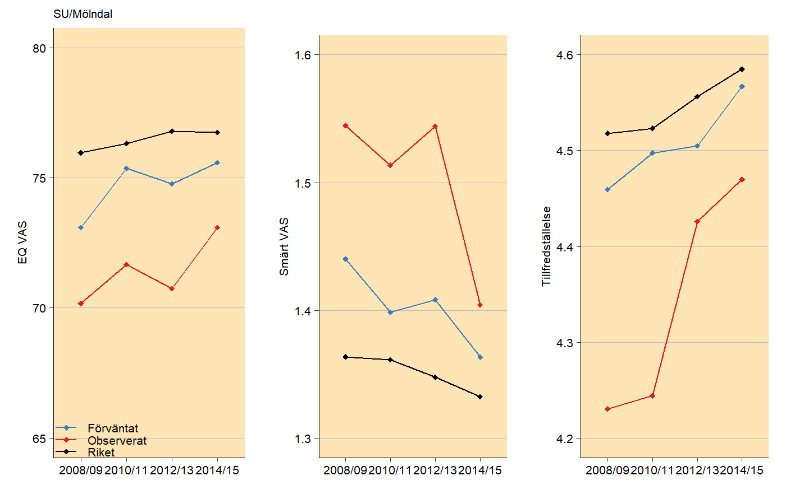

prom_trends.RdVisualizing PROM-trends for each clinic using ggplot2.
prom_trends( eq_vas_exp, eq_vas_obs, eq_vas_riket, pain_exp, pain_obs, pain_riket, satis_exp, satis_obs, satis_riket, riket_name = "Riket", y_labs = c("EQ VAS", "Smärt VAS", "Tillfredställelse"), y_breaks = c(5, 5, 5), year = c("2008/09", "2010/11", "2012/13", "2014/15"), subset = 1, text_size = 8, legend_labels = c("Förväntat", "Observerat", "Riket"), line_colors = c("#377EB8", "#E41A1C", "black"), background_color = "moccasin", panel_grid_color = "grey", panel_grid_size = 0.3, axis_size = 0.3, line_size = 0.5, point_size = 1.5, legend_pos = c(0, 0), n_row = 1, n_col = 3 )
| eq_vas_exp | Data frame with expected EQ VAS data. |
|---|---|
| eq_vas_obs | Data frame with observed EQ VAS data. |
| eq_vas_riket | Data frame with Swedish average EQ VAS data. |
| pain_exp | Data frame with expected pain VAS data. |
| pain_obs | Data frame with observed pain VAS data. |
| pain_riket | Data frame with Swedish average pain VAS data. |
| satis_exp | Data frame with expected satisfaction VAS data. |
| satis_obs | Data frame with observed satisfaction VAS data. |
| satis_riket | Data frame with Swedish average satisfaction VAS data. |
| riket_name | Character to find what row is Swedish average, usually named "Riket". |
| y_labs | Labels for y-axis |
| y_breaks | Y breaks in the three plots. |
| year | X-axis years, character vector works. The year variables will be renamed as they appear in the data set. |
| subset | Which plots should be generated, subset = 1 corresponds to the first plot in alphabetical order. |
| text_size | Text size in pt. |
| legend_labels | Labels for the legends in the plot. |
| line_colors | Colors of the lines. |
| background_color | Color of the panel background. |
| panel_grid_color | Color of the panel grid lines. |
| panel_grid_size | Size of the panel grid lines in plot, useful to change if large dpi! |
| axis_size | Size of the axis lines, useful to change if large dpi |
| line_size | Line thickness of the lines in plot. |
| point_size | Point sizes in plot. |
| legend_pos | Position of the legend in plot, matrix where each row corresponds to a legend position is recommended, if length(subset) > 1. |
| n_row, n_col | Number of rows/columns for the three plots. |
List of several gtable objects where each gtable object is one clinic
# Create trend plot for SU/Mölndal # Look at the 9 data sets to see the required structure. # Data sets are included in the package. example_plot <- prom_trends( eq_vas_exp, eq_vas_obs, eq_vas_riket, pain_exp, pain_obs, pain_riket, satis_exp, satis_obs, satis_riket, y_breaks = c(5, 0.1, 0.1), subset = 49) plot(example_plot)